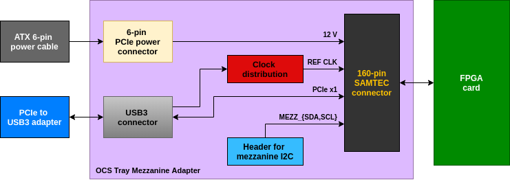
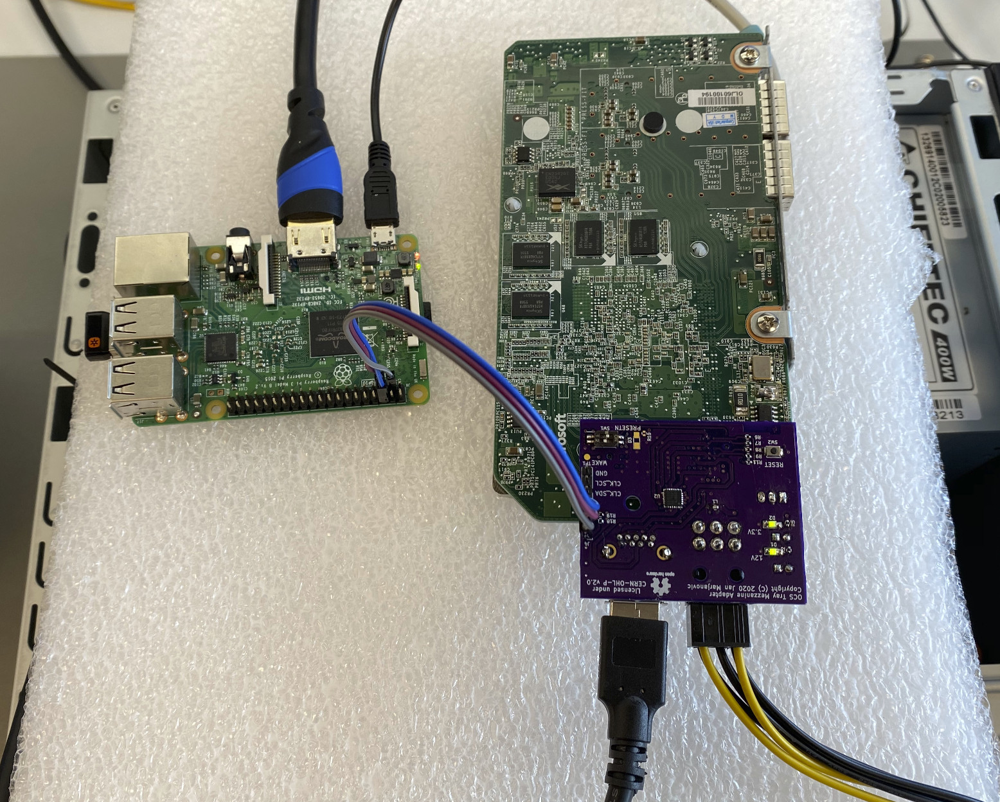
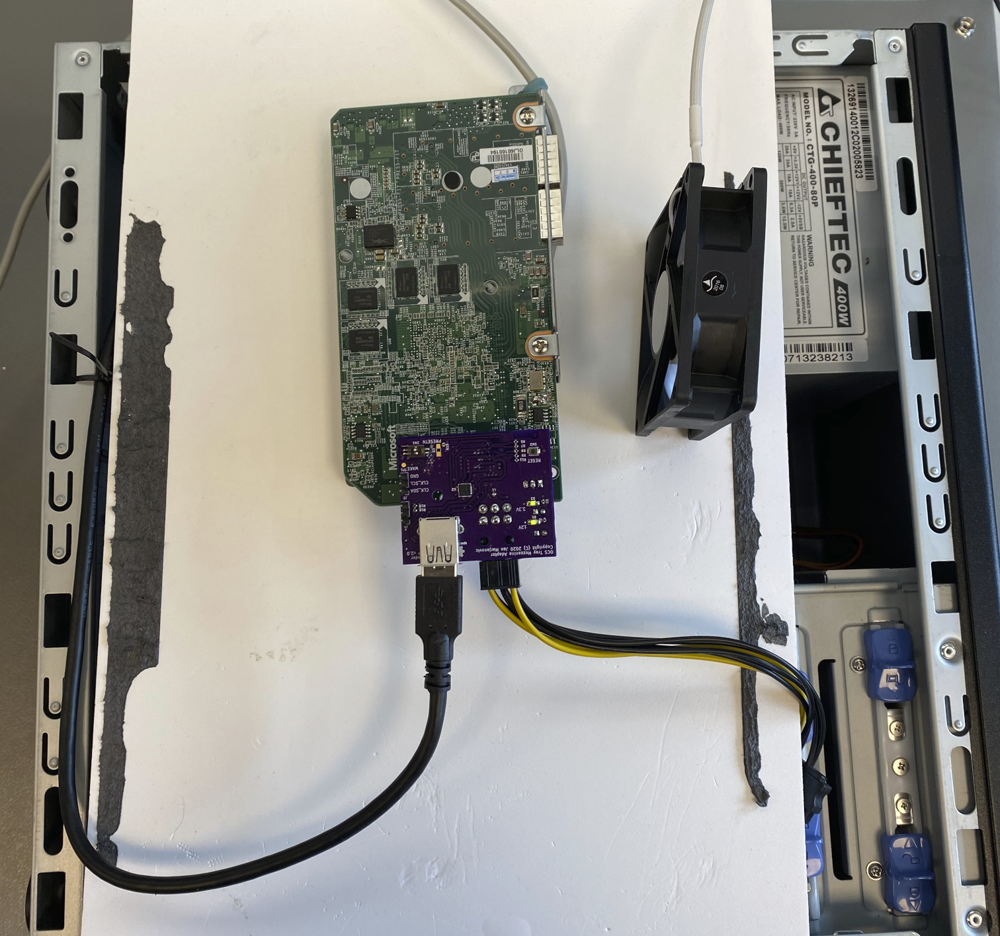

- on Sun 07 June 2020
In my previous blog post I have explored the FPGA card I have purchased on eBay, and in this post I will present an adapter card which I have developed. The adapter provides PCI Express connection between a normal card-edge slot and the FPGA card, as well as the access to the I2C bus and some additional signals.
To summarize my previous blog post, the FPGA card has a 160-pin Samtec connector, providing power (12V), I2C bus for management, and a total of 16 lanes for PCI Express.
The adapter
To keep the cost down, I have tried to make the adapter as small as possible, and at this point to only develop a proof-of-concept. On this first variant of the adapter only connects one PCIe lane, and I plan a second variant where all 8 or 16 lanes will be connected to the PCIe edge connector.
The KiCad project for the adapter card is available on my GitHub.
Shown in the image below are the relevant parts of the adapter card.

To connect to the PCIe slot I have purchased one of those Bitcoin mining riser
cards, which provide
connections between PCIe slot and a USB3 cable. Since there are a total of
4 PCIe reference clock inputs per OCS specification, I have distributed
the clock to all inputs using a dedicated IC. I have connected the management
I2C bus (MEZZ_SDA and MEZZ_SCL) to a header, which allows me to explore the
bus with a Raspberry Pi for example, as shown in the picture below.

I2C
Having a Raspberry Pi connected to the I2C bus, we can first explore the present devices.
Using i2cdetect we can find all devices which have acknowledged their I2C
address:
pi@raspberrypi:~ $ i2cdetect -y 1
0 1 2 3 4 5 6 7 8 9 a b c d e f
00: -- -- -- -- -- -- -- -- -- -- -- -- --
10: -- -- -- -- -- -- -- -- -- -- -- -- -- -- -- --
20: -- -- -- -- -- -- -- -- -- -- -- -- -- -- -- --
30: -- -- -- -- -- -- -- -- -- -- -- -- -- -- -- --
40: -- -- -- -- -- -- -- -- -- -- -- -- 4c -- -- --
50: -- 51 -- -- -- -- -- -- -- -- -- -- -- -- -- --
60: -- -- -- -- -- -- -- -- -- -- -- -- -- -- -- --
70: -- -- -- -- -- -- -- 77
We see the EEPROM at the address 0x51, and another two devices at addresses 0x4C and 0x77 - I would assume that these are some kind of sensors and/or regulators.
IPMI FRU
We can now use the i2cdump to dump the content of the EEPROM. As I have
expected, the EEPROM is used by the Baseboard Management Controller (or
something similar) and the content is compliant with IPMI Platform Management
FRU Information Storage
Definition.
The following information are stored in the EEPROM:
ChassisArea:
version: 1
length: 32 bytes
chassis type: Rack Mount Chassis
part nr: X907370-001
serial nr: (len 0)
checksum: 146 (OK)
BoardArea:
version: 1
length: 64 bytes
lang: 25
mfg date: 2016-01-06 03:26
mfgr: Microsoft
prod_name: PPFPGA
serial: OLJ60100194
part: X900563-001
file id: FRU 1.0
checksum: 108 (OK)
ProductArea:
version: 1
length: 72 bytes
mfgr: Microsoft
prod_name: PPFPGA
part_nr: X900563-001
part_ver: 1.0
part_sn: OLJ60100194
asset_tag:
file id: 1.0
checksum: 241 (OK)
From my understanding of the IPMI standard, the Chassis information should not be present on this card:
A system can have multiple FRU Information Devices within a chassis, but only one device should provide the Chassis Info Area. Thus, this area will typically be absent from most FRU Information Devices.
PCI Express
And finally, the most interesting and the most challenging part, the PCI Express connection.
I have plugged in the card, as shown on the image below and turned on the computer.

And it works! Using lspci command to list all the devices visible to the CPU,
one can also note the Microsoft card:
$ lspci
00:00.0 Host bridge: Intel Corporation 2nd Generation Core Processor Family DRAM Controller (rev 09)
00:01.0 PCI bridge: Intel Corporation Xeon E3-1200/2nd Generation Core Processor Family PCI Express Root Port (rev 09)
00:02.0 VGA compatible controller: Intel Corporation 2nd Generation Core Processor Family Integrated Graphics Controller (rev 09)
00:16.0 Communication controller: Intel Corporation 6 Series/C200 Series Chipset Family MEI Controller #1 (rev 04)
00:16.2 IDE interface: Intel Corporation 6 Series/C200 Series Chipset Family IDE-r Controller (rev 04)
00:16.3 Serial controller: Intel Corporation 6 Series/C200 Series Chipset Family KT Controller (rev 04)
00:19.0 Ethernet controller: Intel Corporation 82579LM Gigabit Network Connection (Lewisville) (rev 04)
00:1a.0 USB controller: Intel Corporation 6 Series/C200 Series Chipset Family USB Enhanced Host Controller #2 (rev 04)
00:1b.0 Audio device: Intel Corporation 6 Series/C200 Series Chipset Family High Definition Audio Controller (rev 04)
00:1c.0 PCI bridge: Intel Corporation 6 Series/C200 Series Chipset Family PCI Express Root Port 1 (rev b4)
00:1c.4 PCI bridge: Intel Corporation 6 Series/C200 Series Chipset Family PCI Express Root Port 5 (rev b4)
00:1c.6 PCI bridge: Intel Corporation 6 Series/C200 Series Chipset Family PCI Express Root Port 7 (rev b4)
00:1d.0 USB controller: Intel Corporation 6 Series/C200 Series Chipset Family USB Enhanced Host Controller #1 (rev 04)
00:1e.0 PCI bridge: Intel Corporation 82801 PCI Bridge (rev a4)
00:1f.0 ISA bridge: Intel Corporation Q67 Express Chipset LPC Controller (rev 04)
00:1f.2 SATA controller: Intel Corporation 6 Series/C200 Series Chipset Family 6 port Desktop SATA AHCI Controller (rev 04)
00:1f.3 SMBus: Intel Corporation 6 Series/C200 Series Chipset Family SMBus Controller (rev 04)
03:00.0 Unassigned class [ff00]: Microsoft Corporation Device b100 (rev 01)
04:00.0 USB controller: NEC Corporation uPD720200 USB 3.0 Host Controller (rev 04)
05:03.0 FireWire (IEEE 1394): LSI Corporation FW322/323 [TrueFire] 1394a Controller (rev 70)
Using lspci -vv to get more information, we see that the link is established
at 2.5 GT/s (probably too many connectors in series to go faster) and at
x1 width (as expected, since we only pass one lane through the USB cable):
$ sudo lspci -s 03:00 -vv
03:00.0 Unassigned class [ff00]: Microsoft Corporation Device b100 (rev 01)
Control: I/O- Mem+ BusMaster+ SpecCycle- MemWINV- VGASnoop- ParErr- Stepping- SERR- FastB2B- DisINTx-
Status: Cap+ 66MHz- UDF- FastB2B- ParErr- DEVSEL=fast >TAbort- <TAbort- <MAbort- >SERR- <PERR- INTx-
Latency: 0, Cache Line Size: 64 bytes
Interrupt: pin A routed to IRQ 11
Region 0: Memory at fa000000 (32-bit, non-prefetchable) [size=16M]
Region 2: Memory at fb000000 (32-bit, non-prefetchable) [size=1K]
Capabilities: [50] MSI: Enable- Count=1/4 Maskable- 64bit+
Address: 0000000000000000 Data: 0000
Capabilities: [78] Power Management version 3
Flags: PMEClk- DSI- D1- D2- AuxCurrent=0mA PME(D0-,D1-,D2-,D3hot-,D3cold-)
Status: D0 NoSoftRst- PME-Enable- DSel=0 DScale=0 PME-
Capabilities: [80] Express (v2) Endpoint, MSI 00
DevCap: MaxPayload 256 bytes, PhantFunc 0, Latency L0s <64ns, L1 <1us
ExtTag- AttnBtn- AttnInd- PwrInd- RBE+ FLReset- SlotPowerLimit 10.000W
DevCtl: CorrErr- NonFatalErr- FatalErr- UnsupReq-
RlxdOrd- ExtTag- PhantFunc- AuxPwr- NoSnoop+
MaxPayload 128 bytes, MaxReadReq 128 bytes
DevSta: CorrErr+ NonFatalErr- FatalErr- UnsupReq+ AuxPwr- TransPend-
LnkCap: Port #1, Speed 8GT/s, Width x8, ASPM not supported
ClockPM- Surprise- LLActRep- BwNot- ASPMOptComp+
LnkCtl: ASPM Disabled; RCB 64 bytes Disabled- CommClk+
ExtSynch- ClockPM- AutWidDis- BWInt- AutBWInt-
LnkSta: Speed 2.5GT/s (downgraded), Width x1 (downgraded)
TrErr- Train- SlotClk+ DLActive- BWMgmt- ABWMgmt-
DevCap2: Completion Timeout: Range ABCD, TimeoutDis+, NROPrPrP-, LTR-
10BitTagComp-, 10BitTagReq-, OBFF Not Supported, ExtFmt-, EETLPPrefix-
EmergencyPowerReduction Not Supported, EmergencyPowerReductionInit-
FRS-, TPHComp-, ExtTPHComp-
AtomicOpsCap: 32bit- 64bit- 128bitCAS-
DevCtl2: Completion Timeout: 50us to 50ms, TimeoutDis-, LTR-, OBFF Disabled
AtomicOpsCtl: ReqEn-
LnkCtl2: Target Link Speed: 8GT/s, EnterCompliance- SpeedDis-
Transmit Margin: Normal Operating Range, EnterModifiedCompliance- ComplianceSOS-
Compliance De-emphasis: -6dB
LnkSta2: Current De-emphasis Level: -3.5dB, EqualizationComplete-, EqualizationPhase1-
EqualizationPhase2-, EqualizationPhase3-, LinkEqualizationRequest-
Capabilities: [100 v1] Virtual Channel
Caps: LPEVC=0 RefClk=100ns PATEntryBits=1
Arb: Fixed- WRR32- WRR64- WRR128-
Ctrl: ArbSelect=Fixed
Status: InProgress-
VC0: Caps: PATOffset=00 MaxTimeSlots=1 RejSnoopTrans-
Arb: Fixed- WRR32- WRR64- WRR128- TWRR128- WRR256-
Ctrl: Enable+ ID=0 ArbSelect=Fixed TC/VC=01
Status: NegoPending- InProgress-
Capabilities: [200 v1] Vendor Specific Information: ID=0000 Rev=0 Len=044 <?>
Capabilities: [300 v1] Secondary PCI Express
LnkCtl3: LnkEquIntrruptEn-, PerformEqu-
LaneErrStat: 0
Capabilities: [800 v1] Advanced Error Reporting
UESta: DLP- SDES- TLP- FCP- CmpltTO- CmpltAbrt- UnxCmplt- RxOF- MalfTLP- ECRC- UnsupReq- ACSViol-
UEMsk: DLP- SDES- TLP- FCP- CmpltTO- CmpltAbrt- UnxCmplt- RxOF- MalfTLP- ECRC- UnsupReq- ACSViol-
UESvrt: DLP+ SDES+ TLP- FCP+ CmpltTO- CmpltAbrt- UnxCmplt- RxOF+ MalfTLP+ ECRC- UnsupReq- ACSViol-
CESta: RxErr- BadTLP- BadDLLP- Rollover- Timeout- AdvNonFatalErr-
CEMsk: RxErr- BadTLP- BadDLLP- Rollover- Timeout- AdvNonFatalErr+
AERCap: First Error Pointer: 00, ECRCGenCap- ECRCGenEn- ECRCChkCap- ECRCChkEn-
MultHdrRecCap- MultHdrRecEn- TLPPfxPres- HdrLogCap-
HeaderLog: 00000000 00000000 00000000 00000000
Summary and outlook
The adapter card did its job and provided access to the I2C bus and a connection to the PCI Express. I have managed to parse the content of the EEPROM (and realize that there is nothing interesting there) and establish the PCIe connection to the FPGA, as a first step of getting the hardware ready for custom developments.
Eventually I plan to develop a card with a wider PCIe link and get rid of the USB cable setup.
There were some mistakes on the adapter board (rotated Samtec connector, swapped TX and RX on the USB connector) which I could work around, and serve as a lesson to be more careful next time and double-check everything.
As the next step, I would like to understand better how the JTAG chip works. I know that it can be used with OpenOCD, but I would imagine that one can somehow also make it talk to Quartus directly.
All trademarks and registered trademarks are the property of their respective owners.